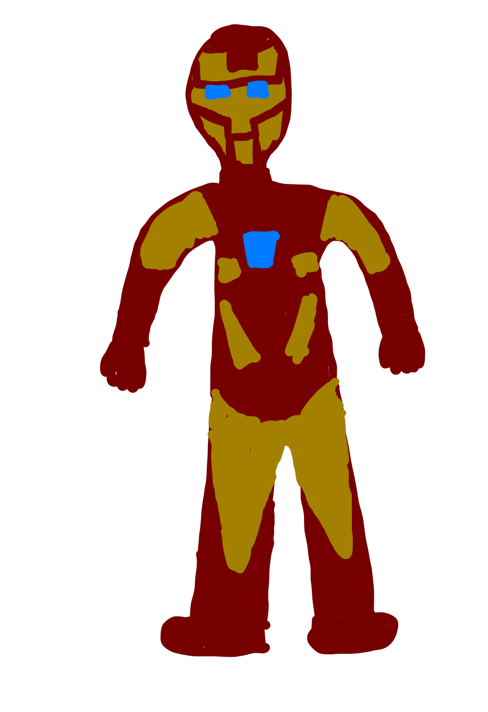

Iron Man released in 2008 and was the first movie that Marvel released. While it is not the first movie in the Marvel timeline, it is very close. Iron Man belongs to Phase One of the Marvel timeline so it being released first didn't cause any storyline trouble. Iron Man was a huge success grossing over $585 million and winning multiple awards. People loved Robert Downey Jr. as Iron Man. Because of his performance in the first Iron Man, Downey, went on to play Iron Man in every Marvel movie in which he appeared.
In the movie, Downey plays the character, Tony Stark, the real name of the man who wears the Iron Man suit. Stark is a super cocky, rich, yet brilliant young man who designs, builds, and sells ultra modern weapons to the United States government. In the movie, Stark is abducted and held captive by terrosists after they attacked a military convoy Stark was in after demonstrating a new missile of his. In captivity, the terrosists force Stark to build assemble the weapons of his company that they got their hands on. Stark secretely builds a prototype Iron Man suit and fights his way out. This was life changing for Stark as he nearly lost his life and was awoken by the fact that his weapons were in the hands of terrorists. He halts all weapon sales by his company and watches as his company falls apart from within. He finds out of a village that was taken over by terrorists using his weapoms and flys there in his new Iron Man suit and frees the people. So, from now on Stark is transitioning to being Iron Man full time. However, the reminants of his first prototype suit got in the hands of terrorists and soon they may have a rival weapon to the suit.
Since Iron Man was such a success Marvel began releasing more movies at a rapid rate. Since Iron Man's release in 2008 Marvel has released a total of 25 movies and counting. Iron has two more movies of his own and is a main character in the Marvel Avengers movies. Iron Man paved the way for the success of Marvel movies.